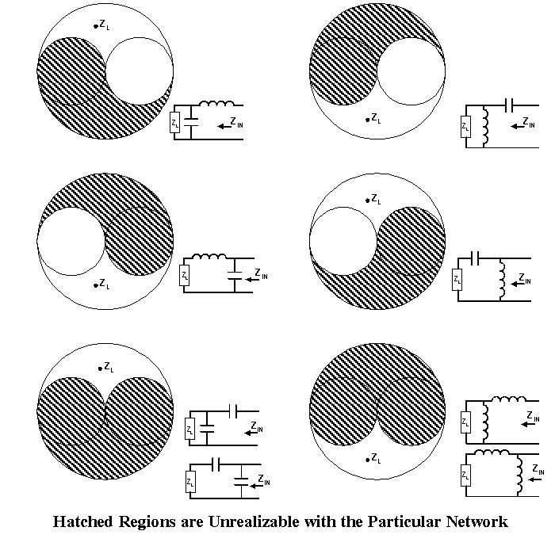

Frequently Asked Questions
Answers to the questions I get asked most often about QuickSmith.
Getting started
What is QuickSmith?
A Smith chart based linear circuit simulator. You build a ladder network out of components, and it shows you where the impedance goes as each one is added.
- Ladder network, built by dragging components onto slots
- Open and save schematic files
- Impedance matching, by hand or automatically
- Frequency and component sweeps
- Interpolated loads for frequency-dependent devices
- Q factors taken into account for every component
- Amplifier design and analysis with gain and noise circles
- Insertion loss and S21 graphs
- Transmission line calculations, including microstrip and coax dimensions
- Constant conductance, VSWR and Q circles
- Import and export of measurement files
- Worked examples, both as documents and as guided tours
How do I get started?
The chart is on the left, the schematic on the right. In the parts bin in the middle of the schematic, pick up the resistor and drag it onto one of the empty slots in the ladder above or below. A box asks for its value. Type one and press Enter.
You do not have to work out where a part is allowed to go. Pick one up and every slot that will take it outlines itself, and the one under the pointer fills in. Parts that go in series light the horizontal slots, stubs light the vertical ones, and the two load chips light only the load position at the far left. On an untouched ladder the slots are outlined from the start, so there is somewhere obvious to aim before you have picked anything up at all.
The dot on the chart moves to where that component puts you, and a coloured arc shows the path it took. From there the spin buttons beside the value walk it up and down, and you can watch the dot travel. Drag the wire onto a slot to clear it again.
What does the load represent?
The load on the far left of the ladder is the device you are looking into. Think of a network analyser with a cable on port 1 and something connected to the end of it. The right-hand end of the ladder, Zin, is what the analyser displays.
What are the default units?
Frequency in MHz, resistance and reactance in ohms, inductance in nH, capacitance in pF. Line lengths are in degrees of electrical length, so a quarter wave is 90. Settings also offers inches, millimetres, metres and wavelengths. The units are shown beside each value in the ladder, so you never have to remember which slot is which.
Degrees is the default for line lengths because a length of line does one thing on a Smith chart: it rotates you around the centre. Worth knowing that the two angles are not the same one. A quarter wave is 90 degrees of electrical length, which you type in, and it carries you half a turn around the chart, because the reflection coefficient rotates at twice the rate. Degrees is also the only answer that does not depend on the velocity factor and the frequency being settled first. When you want a physical dimension, Data → Microstrip and coax gives you a track width and a length with the substrate taken into account, which is a better answer than a bare measurement.
How do I change the load resistance and reactance?
At the right-hand end of the parts bin are two lettered chips. Drag RX onto the load slot to enter the load as R + jX, or MA to enter it as a reflection coefficient in magnitude and angle. You can also type straight into the two value boxes under the load once it is placed.
How do I change the step size?
Double-click a value box, or click into it and press s. On a phone or tablet, press and hold the box for a second instead. Any of the three asks for a new step, and the spin buttons beside that box then move by it. Set a coarse step to get near, then a fine one to settle.
Matching
How do I match to 50 ohms?
Enter the load and the operating frequency, then add components until the dot lands in the middle of the chart. The trick is always the same: get onto the circle that passes through the centre, then use the last component to slide along it to the middle.
You do not have to work out which component that is. Tick
Next move in the Overlays panel and QuickSmith keeps a line
under the chart reading something like
next: series L 122.1 nH, then shunt C 109.7 pF. That is the
shortest way from where you are now to the centre, and it updates as you edit.
It starts off, because being told the answer is not much help while you are
still learning to read the chart.
The map below is the classic version of the same idea, and it is worth knowing even though the program now does it for you. Each circle shows where a load has to sit for that particular two-element network to be able to reach 50 ohms.

Can QuickSmith design the matching network for me?
Press Auto-match to 50 Ω in the middle of the menu bar. It works out every two-element network that takes the present load to the characteristic impedance at the current frequency and lists them with their component values and loaded Q, lowest Q first. Lower Q means wider bandwidth. Nothing changes until you press Apply on the one you want.
There are at most four: a series element next to the load followed by a shunt one, or the other way round, each with two solutions. Applying clears the rest of the ladder, because the match is worked out from the load outwards.
Type a number into Loaded Q in that dialog and you get Pi and T networks as well. Those have a third component, which is what lets you choose the Q rather than accept whatever the transformation happens to give. Ask for a Q below what an L-network already achieves and there is nothing to offer, and it will say so.
If the list is empty, either the load is already matched or two elements cannot reach it. Try a transmission line, or add a third component by hand.
Can it match a whole band instead of one frequency?
Yes, once a measurement is loaded. Import a sweep with Data → Open Measurement and a Broadband match button appears beside Auto-match. The two answer the same question at different widths: Auto-match is exact at the frequency on screen, this one looks for the best compromise across a band.
There is no closed form for that, so it is searched for. QuickSmith tries six topologies, from a two part L-network up to a stub, a line and a second stub, and reports the worst VSWR each one reaches anywhere in the band, best first. It runs in the background, so the page stays live, and closing the dialog gives up on it. Apply puts the network in the ladder.
The worst case is what gets minimised, not the average, so the answers look wrong at first. None of them are centred. A network that is perfect at band centre and poor at both edges is worse than one that is mediocre everywhere, and a transmitter does not care how good the middle is if an edge is 4:1. Expect a match that is deliberately worse at the centre than a single-frequency design would be.
The dialog will not let you waste an afternoon. Before any searching it reports what the band is asking for:
Unmatched, the worst VSWR in this band is 3.88. The antenna is Q 1.8 here, and no lossless network of any complexity can beat 1.15:1 across it.
That second figure is the Bode-Fano limit, and it is a wall rather than a target. It assumes an unlimited number of components, so nothing with three or four parts will reach it. Its use is deciding whether to bother: a floor of 1.05 says keep going, a floor of 2.5 says the band is too wide for this antenna and no amount of cleverness will change that. It is the only number in the dialog that describes the antenna rather than a particular network.
An imported sweep is usually far wider than anything you would operate over, so the dialog also offers bands worth trying, one per bandwidth, placed where the antenna is already closest to matched. Pressing Use moves the sweep, the chart and the line design frequency onto that band. Nothing is thrown away, so a wider band brings the rest of the measurement straight back.
Two things it will tell you rather than fail silently. If the measurement reads a reflection coefficient of 1 or more anywhere in the band, it names those frequencies and suggests where to start instead: that reading says the antenna returns all the power it is given, nothing passive can match it, and one such frequency is enough to sink the whole search. It is usually calibration error where the antenna is electrically tiny, not a broken measurement. And if a load is typed as a single R + jX rather than measured, it declines, because a constant impedance has no band to compromise over and Auto-match is already the exact answer.
Help → Guided examples has a worked one: a measured dipole taken from 3.88:1 to 1.63:1 across 100 to 200 MHz with two components.
Can I tune by dragging on the chart?
Yes, with a mouse or a finger. Every component puts a grab handle on its node. Take hold of one and pull, and QuickSmith solves backwards for the value that puts the node under your pointer, then rebuilds everything from it. The handle is bigger than it looks, and bigger again on a touch screen, so aim at the coloured dot and you will have it.
A component can only move its own node along its own locus, so a series part slides round a constant resistance circle and a shunt part round a constant conductance circle. That constraint is the physics, not a limitation of the program, and watching it is a quick way to build the intuition. Parts with no single value to solve for, such as a transmission line, have no handle.
How do I match to an impedance other than 50 ohms?
Two ways. Change Ch. Impedance in Settings and the whole chart is normalised to the new value. Or leave it alone and set a target marker instead: Marker → Set... in the Overlays panel puts a cross wherever you like, and you match to that.
Where do I read VSWR and return loss?
They are always on screen, in the readout column between the chart and the schematic: Zin, Yin, VSWR, return loss, insertion loss, loaded Q, and the bandwidth over which VSWR stays under 2. All values and equivalents under them opens the full set, including the series and parallel equivalents of the input impedance.
For any other point, move the pointer over the chart. The box under it follows you and reads out the impedance you are hovering over.
Is there anything to open if I have not saved a design yet?
File → Open Design offers two that ship with the program. A dipole, matched by hand is an inductor and a stub taking a measured antenna from 3.88:1 to 1.84:1 across 100 to 200 MHz, and it is worth pressing Broadband match on it afterwards to see the search beat it. A low-pass filter is four parts at 27 MHz, 0.75 dB through the passband and 53 dB down at 100, which is a reminder that the ladder does not have to be solving a matching problem at all.
Both open as ordinary designs, so every value can be edited, swept and
dragged. Choose a file… in the same dialog opens your
own .sch.
Where can I find tutorials or examples?
Help → Guided examples picks one of the worked designs and rebuilds it a component at a time, saying what each one does and why it goes where it does. Step back and forth with Back and Next. Nothing special happens while a tour runs, so you can stop at any step and carry on editing by hand. One of them, A measured antenna, across its whole band, works on a real measured dipole rather than a single impedance, and is the quickest way to see what matching a band actually looks like.
Help → Examples in full is the written version: the same designs worked through in detail, including the two amplifier examples.
Working
How do I undo something?
Ctrl+Z, or ⌘Z on a Mac, steps back through the design. Add Shift to go forward again. Both are in the File menu too.
A whole drag on the chart counts as one undo rather than one per pixel, and a guided example counts as one for the entire tour, so undo takes you back to your own design rather than walking you backwards through somebody else's.
How do I sweep frequency or a component?
Set the range in the Response panel under the chart: choose what to sweep, then Start, Stop and Step. Sweep → Generate then draws the swept locus on the chart, and Sweep → Clear removes it. The same settings, plus the trace colour, are in Settings if you prefer them there.
Once a sweep is on the chart it keeps itself current: change a component, the frequency or the load and the locus is redrawn for the circuit you have now, so what you are looking at always describes what you have built. Opening a measurement as the load sweeps its band straight away, since measuring a band and then being shown one frequency is a poor trade.
The coloured arcs are in my way
Turn Element paths off in the Overlays panel. They are on by default because they are the part that teaches: each arc shows where one component took you and by which route, which is the whole argument for using a Smith chart instead of a calculator.
They earn their place while you are building a network of two or three parts. They stop earning it once there is a swept band on the chart as well, because then you have a curve for the sweep and an arc for every component, and the picture gets busy. That is the moment to turn them off. Turn them back on when you want to see how a particular component is moving you.
What does the response graph show?
Insertion loss and S21 across the sweep range. The source is the characteristic impedance, 50 ohms by default, and the network is terminated by whatever load you have set, so this is a transducer loss: it counts mismatch as well as dissipation. A lossless network that matches its load reads 0 dB.
This used to be a separate window. It is now a panel on the main page that redraws as you edit, so you can watch the passband move while you turn a value.
How do I avoid losing my work if the page reloads?
File → Save Session stores the design in this browser, and a reload picks it up again. Restore Session recalls the last one you saved, and New Session throws it away and starts clean.
File → Saved Designs is the one to know about. A session holds exactly one design and the next save overwrites it; the shelf holds as many as you like, under names you choose, in this browser. Name the design, press Save, and it is a click away from then on. Saving again under the same name replaces it and moves it to the top, so tuning and re-saving does not leave a trail of near-identical copies. The × beside a name deletes it.
For anything you want to keep properly, use Save Design to write a
.sch file, or Copy Share Link to put the whole design
in a web address. A saved design carries its step sizes too, so a box you had set
to move in 0.001 steps still does when you come back to it.
How do I get a track width instead of an impedance?
Data → Microstrip and coax. Give it the substrate, its dielectric constant and its thickness, and every transmission line in your ladder is listed with the track width and the physical length that would build it. For coax, give it the bore and it returns the inner conductor diameter instead.
Apply to the design rewrites the ladder in millimetres and sets the velocity factor to match, so the circuit behaves exactly as it did but is now expressed in numbers you can hand to a layout tool. That needs one velocity factor to cover every line, which a microstrip board only gives you when the lines are all the same width: a narrow track keeps more of its field in the air and travels faster than a wide one. When they differ, the button is withheld and the dialog says why. Read the lengths off it and leave the design in degrees.
What is the Amplifier Design window for?
Amp. Design in the menu bar opens it. There are two Smith charts, one for the source plane and one for the load plane, and you use them to trade gain against noise figure. Stability circles, gain circles and noise circles are all drawn for you. The four S-parameters are typed in rather than read from a file, because every circle it draws is at a single frequency, so it is four numbers entered once. See the small signal amplifier example in Help → Examples in full. Back in its menu returns you to the chart.
Getting data in and out
How do I load a measurement from my network analyser?
You do not need a file of your own to try this. Data → Open Measurement offers three real measurements that ship with the program: a dipole across an octave, and a 75 mm monopole swept from 300 MHz to 1.5 GHz on both an HP 8753C and a NanoVNA. The last two are the same antenna on the same afternoon, so they are worth loading one after the other. Any of them can be the load, which is what matching a whole band needs. The same dialog has Choose a file… for your own.
Data → Open Measurement reads a Touchstone file, the format
every VNA exports. It takes .s1p and .s2p, and files with
more ports than that as well, reading S11 and ignoring the rest, which is all a
load needs. It also reads QuickSmith's own .gam files.
It then tells you what it found, points, frequency range and reference impedance, and asks what the measurement should be:
- The load. The circuit sees this impedance at every frequency, interpolated between the measured points, so you are matching a real antenna instead of a typed-in impedance. The sweep range is set to the range of the file, and a file measured against a different reference impedance is renormalised to yours.
- A trace. Drawn on the chart and nothing more, leaving your load alone. This is the one for comparing: put the measurement on the chart, build a network against a different load, and see the two together. Data → Clear Trace removes it.
If you reach for File → Open Design out of habit and hand it a
measurement, it imports it rather than complaining. Open Design is for
.sch design files, but nobody should have to know that to get their
file in.
With a measurement loaded as the load you can match the whole band at once rather than one frequency: see matching a whole band.
Data → Export Touchstone writes the network back out as a
.s1p. If you have not run a sweep it runs one first, so the file is
always a description of the circuit rather than of whatever happened to be on the
chart.
How do I share a design with someone else?
File → Copy Share Link puts the whole thing in a web address: frequency, load, every component and the chart overlays. Opening that address rebuilds the design exactly, so an answer on a forum can be a link to the working circuit instead of a screenshot and a list of values. A four-component match comes to about 120 characters. A link carrying measured load data is longer.
Can I get a picture of the chart, or the numbers?
All in the menus.
- File → Capture Chart (PNG) for an image.
- File → Chart as SVG for vector art that stays sharp at any size and opens in Illustrator, Inkscape or a word processor. It is also the one to print: open the file and print it from there, and you get the chart on the page at full size with none of the rest of the screen.
- Data → Export Sweep (CSV) for a spreadsheet, one row per point, with impedance, VSWR and return loss worked out for you.
What is the .gam format for?
It is QuickSmith's own JSON, written by Data → Export Gamma and
read by Open Measurement like any other measurement. Sample files
are in the gam folder. To make one, generate a sweep and export it.
For anything coming off an instrument, Touchstone is the better choice, since
everything else can read it too.
Other questions
Does it work on a phone or tablet?
Yes. The layout reflows to the screen, all twelve slots are there, dragging components works with a finger, and the chart pinches to zoom. The ladder sits directly under the chart on a narrow screen, so you can drop a part and watch the dot move without scrolling.
One thing needs a mouse and is simply absent on a touch screen: the readout that follows the pointer around the chart. Changing a step size is a double-click on a desktop and a press and hold on a touch screen.
How do I report a bug or suggest something?
Help → Send feedback. Type what happened and it opens a message to feedback@quicksmith.online with your circuit already attached as a link, along with your browser and window size.
The circuit is the useful part. A report arrives with the exact ladder that caused it, so it can be opened and pulled apart rather than guessed at from a description. If your browser has no mail app set up, use Copy it instead and paste it into whatever you use.
If you would rather work in the open, there is an issue tracker on GitHub.
How long has QuickSmith been around?
Since 1993, when it was written for Windows 3.1. As far as I know it was the first Smith chart program with a graphical interface on Windows, and it stayed a Windows program for the next two decades. People kept using it long after that, which is how it ended up here: newer versions of Windows would not run it any more, and the requests to fix that never stopped. It was ported to the web in 2017, and rebuilt in 2026 with a good deal added, so there is now nothing to install and nothing to go out of date.
Along the way other people taught with it, which is the part I am proudest of.
- QEX, the ARRL's experimenter's journal, ran Using QuickSmith by Harold Kinley, WA4GIB, in two parts, in the July/August and September/October 2010 issues. He works several matching problems right through the program. Harold became a silent key in 2017.
- Kinley also covers it in The Radioman's Manual of RF Devices, Principles and Practices.
- In Japan, Katsumi Ooi, JA5COY, shipped QuickSmith on the CD with his antenna and matching books for CQ Publishing, the first of them a print run of 5,000. The most recent is パソコンでスッキリ! 電波とアンテナとマッチング, roughly "radio waves, antennas and matching, made clear on a PC".
- RF Cafe has listed it among its Smith chart tools since the 1990s.
The longer version of that story, including how a program written for one bench in 1993 ended up on a CD in Japan, is in Where a Smith chart program travels in thirty-three years.
If you have used QuickSmith in a class, a book or an article, I would like to know: feedback@quicksmith.online.
Where do I get the latest version?
From GitHub. It is a set
of static files with no build step, so you can also just download it and open
index.html.
Where can I read more about the formulas behind this?
- Electronic Applications of the Smith Chart, Phillip H. Smith, Robert E. Krieger Company, Malabar, Florida.
- Hewlett-Packard Application Note 970, February 1978.
- Microwave Transistor Amplifiers, Guillermo Gonzalez, Prentice-Hall, 1984.
- QEX, July/August and September/October 2010. Using QuickSmith, Parts 1 and 2, by Harold Kinley, WA4GIB.